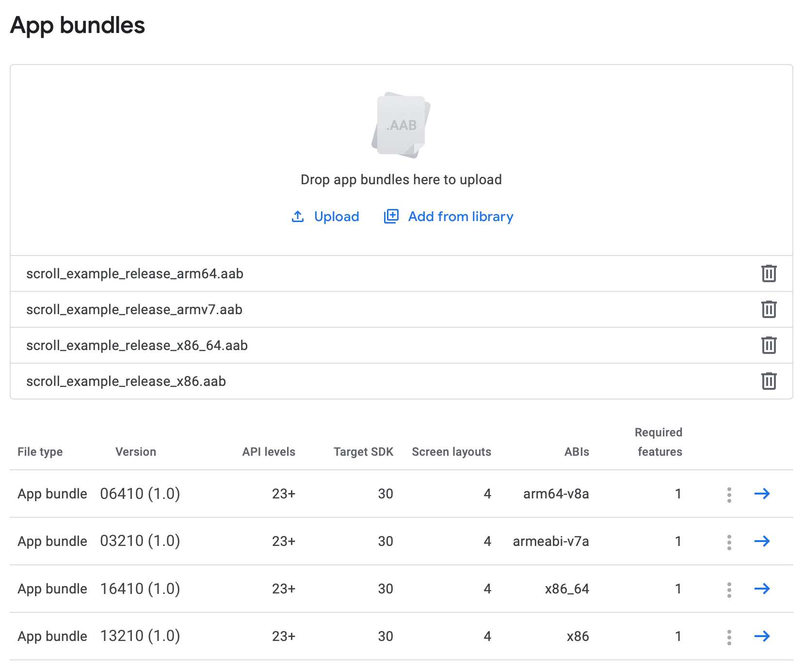

Publishing to Google Play
Qt for Android provides a complete solution to develop, build, and package your applications for Android. Most of these tasks, especially packaging and deployment are handled by Qt Creator providing rich developer experience.
Every time you run the application using Qt Creator, an Android Application Package (APK) is created and deployed onto the target of your choice (device or emulator). With few minor changes to packaging settings, you can publish your application on Google Play.
Building the App
The following instructions guide you to create an .apk or .aab that can go live on Google Play
- Open your project with Qt Creator 4.11 or later choosing a
Release Build. - Select Projects > Build > Build Android APK > Create Templates to create the Android package template files such as
AndroidManifest.xmlwhich is the main file of concern here. - Check for the following settings in
AndroidManifest.xml:- Set Minimum required SDK to API 23 or later.
- Set Application name and Application icon.
- Check the Permissions list has all the required permissions.
- Check the Features list has the software or hardware features that your application depends on, such as GPS or NFC.
For more information, see editing the Manifest Files in Qt Creator.
Note: By default, Qt adds the permissions and the features based on the module dependencies of your application. If you do not want these default permissions and features, either deselect the checkboxes Include default permissions for Qt modules and Include default features for Qt modules, or remove the following part from the
AndroidManifest.xmlfile:<!-- The following comment will be replaced upon deployment with default permissions based on the dependencies of the application. Remove the comment if you do not require these default permissions. --> <!-- %%INSERT_PERMISSIONS --> <!-- The following comment will be replaced upon deployment with default features based on the dependencies of the application. Remove the comment if you do not require these default features. --> <!-- %%INSERT_FEATURES -->For information on the manifest XML format, see Android: App Manifest.
- Set up a keystore to sign your
.apkfile. You can create a new keystore if you do not have one. For more information, see Specifying Settings for Packages in Qt Creator. - Locate the generated package:
- For APK packages, locate the
.apkpackage at:<$BUILD_DIR>/android-build/build/outputs/apk/release/android-build-release.apk
Note: In Qt Creator, select Projects > Build > Build Steps > Build Android APK > Open package location after build to build the application's
.apkand open the directory containing the package. - For AAB packages, select Projects > Build > Build Steps > Build Android APK > Build .aab (Android App Bundle) for Qt Creator to generate the
.aabfile, then locate the package at:<$BUILD_DIR>/android-build/build/outputs/bundle/release/android-build-release.aab
- For APK packages, locate the
Uploading the App to Google Play Store
Log into the Google Play Developer Console and upload the .aab files, along with a description and screen captures resembling the usage of your application.
For Qt versions that supports building a multi-abi bundle (i.e. Qt 5.14 and 5.15), uploading one .aab with all the supported architectures is enough. However, for Qt versions that don't have the multi-abi build support, publishing your app requires additional steps.
Publishing Single-ABI bundles
To publish your app that is built using a single ABI kit, you need to make sure that each ABI uses a different internal version code. The version code is an intenal non-public identifier for your app's release. Build each one of the architectures you want to support and set a different version code for each ABI. This can be done as follows, for CMake:
set_property(TARGET scroll_example APPEND PROPERTY QT_ANDROID_VERSION_CODE <unique_version>)
Or as follows for qmake:
ANDROID_VERSION_CODE = <unique_version>
The app developer can use a specific scheme for the version code, for exampe, the code could have a chunks for the platform, the ABI, and the actual version. Then, a sample scheme would be <Platform><ABI><AppVersion>:
- Platform:
- 0 for Arm
- 1 for Intel
- Architecture:
- 32 for 32 bit
- 64 for 64 bit
The resulting version code for a release 1.0 for arm64-v8a ABI, would be 06410.
The following screenshot shows an example for an app targeting 4 ABIs, while each package uses a unique version code, which is different from the version name that is the public version string.

For more information on packaging, see Deploying an Application on Android.